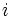
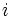
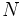

![[Main Page]](../../rsrc/bci2000logo.svg)
TrialStatistics Class
Programming Reference
Location
BCI2000/src/shared//modules/application/utils
Synopsis
The TrialStatistics class provides bookkeeping for trial outcomes in form of a frequency matrix recording target and result of each trial.
The TrialStatistics class is a descendant of the EnvironmentExtension class.
Properties
int Hits (r)
The number of trials where the result matched the target.
int Total (r)
The total number of trials recorded.
int Invalid (r)
The number of trials recorded as "invalid". Invalid trials do not enter into performance computation.
float Bits (r)
The amount of information transferred since the last reset, given in bits. See the notes below for details.
Events
Initialize
During system initialization, TrialStatistics uses the NumberTargets parameter to determine the size of its internal frequency matrix.
Methods
Reset()
Resets the invalid trials counter, and all entries of the frequency matrix to 0.
Update(int TargetCode, int ResultCode)
Adds the outcome of a trial to the frequency matrix.
UpdateInvalid()
Increments the invalid trials counter.
Remarks
The Bits() function computes the amount of information transferred through a noisy channel when for each combination of input and output symbols (target and result codes) the number of occurrences is given in form of the elements of a frequency matrix.
The computation uses the formula for information transfer through a noisy channel as given in
Shannon, A Mathematical Theory of Communication, in: The Bell System Technical Journal, Vol. 27, 1948, section 16:
where  is the information transferred per symbol, is a probability distribution over input symbols, and noise is represented as a ``transition matrix that contains the probability for output if the input is .
is the information transferred per symbol, is a probability distribution over input symbols, and noise is represented as a ``transition matrix that contains the probability for output if the input is .
In the expression, the first term represents the entropy of the distribution of output symbols (result codes); the second term represents the reduction of this entropy introduced by noise, and is given as the negative of the entropy for each row: , weighted by the probability for the occurrence of its input symbol, i.e. for its actual occurrence during transmission.
We consider the elements of the frequency matrix as an estimate for where  is the number of symbols transferred, i.e. the number of trials, and the relative frequencies of target codes as an estimate for the . From this, we compute the total number of bits transferred, i.e. Shannon's expression multiplied by .
Limitations
Shannon's expression is based on assumptions that are likely to be violated in practice, most notably
- the assumption that successive input symbols (target codes) are independent of each other -- this is clearly violated by obtaining target codes from a block randomization scheme, implying an over-estimate of the bit rate, but also
- the assumption that noise affects successive input independently is not necessarily fulfilled, especially in the presence of an adaptive algorithm.
See also
Programming Reference:ApplicationBase Class, Programming Reference:EnvironmentExtension Class